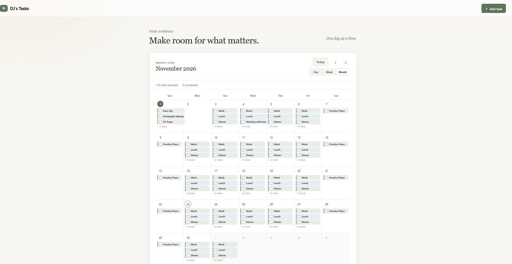
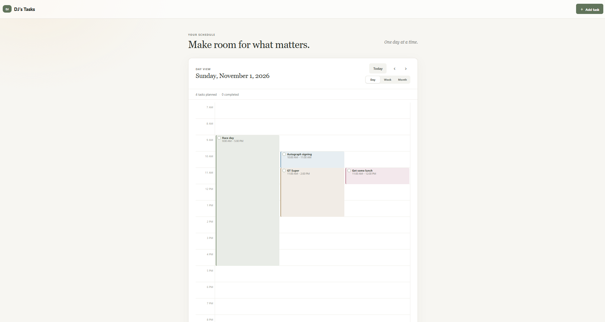
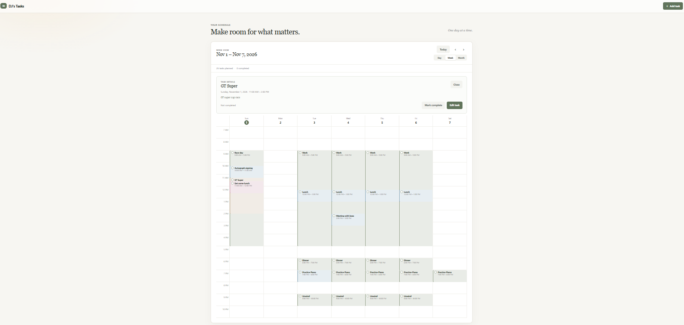

Q-Learning Agent in OSRS
An AI project exploring a Q-learning agent in Old School RuneScape. Visit the repository for the project details and code.
View project on GitHubA little about my background, the projects I’ve worked on, and what I’m proud of.
Get to know meI’m a first-generation immigrant from England and a graduate of Southwestern University. My experiences in college, high school, and volunteer work have shaped my path.
An AI project exploring a Q-learning agent in Old School RuneScape. Visit the repository for the project details and code.
View project on GitHub


A personal scheduling app for organizing tasks and seeing what’s ahead. Switch between daily, weekly, and monthly views to plan at a glance.
Accomplishments and achievements will be added here.